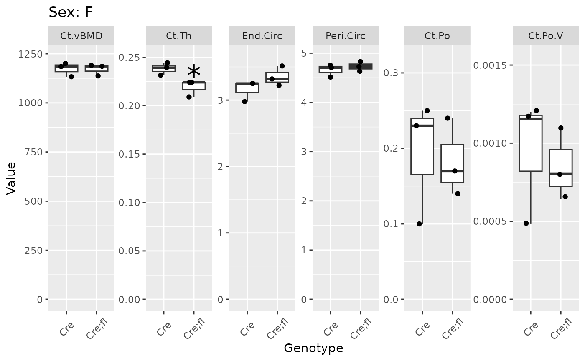

Plot bone microCT data by genotype or treatment
plot_groups.RdThis function takes in bone microCT data and produces boxplots comparing two genotypes or treatments.
Arguments
- data
A tibble/data frame containing bone microCT data, formatted as is the output of
read_trabecular_csv(),read_cortical_csv(), orread_mfe_csv()(orread_*_excel()).- type
A string indicating the type of data supplied. Options include
trabecular,cortical, orfea. Alternatively, a specific microCT measure of interest can be specified (e.g.,Ct.vBMD). Defaults toNULL, in which case the function will try to figure out which type of data it is.- title
A string indicating what type of title the plots should have. Defaults to
sex, which is currently the only option implemented. To remove titles from the plots, settitletoNULL.- x_axis_angle
The angle at which to rotate the x-axis labels so they don't overlap, passed on to
ggplot2::theme()asaxis.text.x = element_text(angle = x_axis_angle).
Value
A list containing ggplot2::ggplot() objects for sex each analyzed.
To print each plot without printing the list index, see print_plots().
Details
If the two genotypes or treatments are significantly different, statistical
significance will be indicated with "*" if P < 0.05, "**" if P <
0.01, or "***" if P < 0.001.
Examples
gen_key <- read_key_csv(mctr_ex("example-gen-key.csv"))
#> Rows: 12 Columns: 7
#> ── Column specification ────────────────────────────────────────────────────────
#> Delimiter: ","
#> chr (2): Sex, Genotype
#> dbl (5): AS, SampNo, Spine, Met, Dia
#>
#> ℹ Use `spec()` to retrieve the full column specification for this data.
#> ℹ Specify the column types or set `show_col_types = FALSE` to quiet this message.
gen_cort <- read_cortical_csv(mctr_ex("example-twice1.csv"),
mctr_ex("example-twice2.csv"),
gen_key)
#> Rows: 36 Columns: 75
#> ── Column specification ────────────────────────────────────────────────────────
#> Delimiter: ","
#> chr (44): SampName, MeasDate, ListDate, Filename, Site, Energy-I-Code, Contr...
#> dbl (26): SampNo, MeasNo, Integr.Time, Sigma, Support, Threshold, Unit, Data...
#> lgl (5): S-DOB, S-Remark, Meas-Rmk, RAW-Label, IMA-Label
#>
#> ℹ Use `spec()` to retrieve the full column specification for this data.
#> ℹ Specify the column types or set `show_col_types = FALSE` to quiet this message.
#> Rows: 36 Columns: 75
#> ── Column specification ────────────────────────────────────────────────────────
#> Delimiter: ","
#> chr (43): SampName, MeasDate, ListDate, Filename, Site, Energy-I-Code, Contr...
#> dbl (27): SampNo, MeasNo, Integr.Time, Sigma, Support, Threshold, Unit, Data...
#> lgl (5): S-DOB, S-Remark, Meas-Rmk, RAW-Label, IMA-Label
#>
#> ℹ Use `spec()` to retrieve the full column specification for this data.
#> ℹ Specify the column types or set `show_col_types = FALSE` to quiet this message.
plot_groups(gen_cort |> dplyr::filter(Site == "Dia"))
#> $M
#>
#> $F

#>